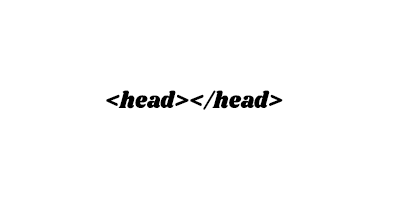
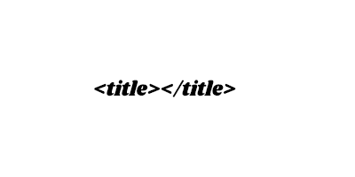
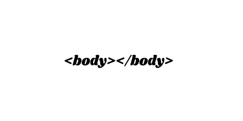
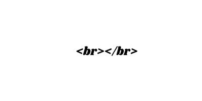
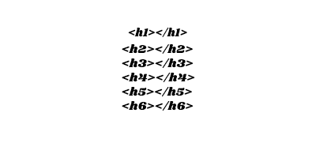

Cara membuat web / blog dengan hasil sendiri
Persiapkan:
-Skill dalam Coding
-Windows 95 , 98 , NT , XP , Vista , Dll.
-Koneksi ke Server (Internet)
-Mempunyai komputer yang normal
-Program-program CODING yaitu : Notepad++(untuk pemula) , Sublime Text 3 , Atom , dll.
-Pastikan Kompter Mampu untuk Multi Program
Tag - tag pada HTML :
-HTML
Merupakan Tag dasar mendefinisikan bahwa dokumen ini adalah dokumen HTML. Tag ini merupakan satu keharusan bagi pemerogram web untuk menuliskannya sebagai tag pertama dalam dokumen HTML.
-Head
Merupakan tag berikutnya setelah HTML untuk menuliskan keterangan tentang dokumen web yang akan ditampilkan.
-Title
Merupakan tag di dalam head yang harus dituliskan untuk memberikan judul/informasi pada caption browser web tentang topik atau judul dari dokumen web yang ditampilkan dalama Browser.
Body
Merupakan section utama dalam dokumen web. Pada section ini semua isi dokumen yang akan ditampilkan di dalam Browser harus dituliskan.
Paragraf
Informasi yang disajikan dalam dokumen harus mengikuti kaidah - kaidah dalam penulisan. Misalnya satu pikiran utama disimpan dalam satu paragraf.

Line Break
Kita dapat memaksakan ganti baris pada dokumen web. Ganti baris di sini dimaksudkan hanya menyajikam informasi pada baris sendiri tetapi tidak berganti paragraf. Untuk menampilkan suatu teks ditampilkan pada baris yang baru dalam suatu Paragraf, maka harus dugunakan tag (br) sebelum teks yang dimaksud tersebut dituliskan
Heading
Teks dalam dokumen umumnya mempunyai judul topik, pada dokumen HTML judul ini disebut heading. Heading tulisan akan ditampilkan dengan huruf yang lebih besar / ditebalkan. Heading juga dimanfaatkan untuk menunjukkan tingkat keberartian dari teks yang akan dituliskan. Ada 6 tingkat nomor heading dalam HTML, Dinomori dari 1 sampai dengan 6. Nomor 1 merupakan heading yang terbesar. setiap heading dalam dokumen harus diberi tag, tergantung pada kebutuhan / keberartian teks tersebut.
 ← Kembali